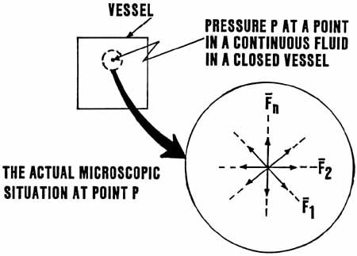

SLIDE 7.
A SCALAR HAS A HIDDEN [VIRTUAL] VECTOR SUBSTRUCTURE

| Our
next slide shows that a physical scalar quantity has a hidden vector
substructure. For example, we show on the left a closed vessel containing a pressurized gas. The pressure at a point in the gas is a scalar quantity, since it has a magnitude but not a direction. However, physically what we have in the gas is a flux of individual molecules continually through any small volume, which we may let approach a point in the limit. Thus we have a flux in all directions through the point at which we specify pressure. That is, the scalar "pressure" at a point may be said to contain a substructure of individual molecule flow vectors. All physical process scalars have such hidden substructures. In the equilibrium case, the summation of all the individual flux vectors yields a resultant vector zero. Thus we take the view that ANY PHYSICAL PROCESS SCALAR IS ALSO A ZERO VECTOR, AND ANY ZERO VECTOR IS A SCALAR AND CONTAINS A SUM-ZERO HIDDEN VECTOR SUBSTRUCTURE. |